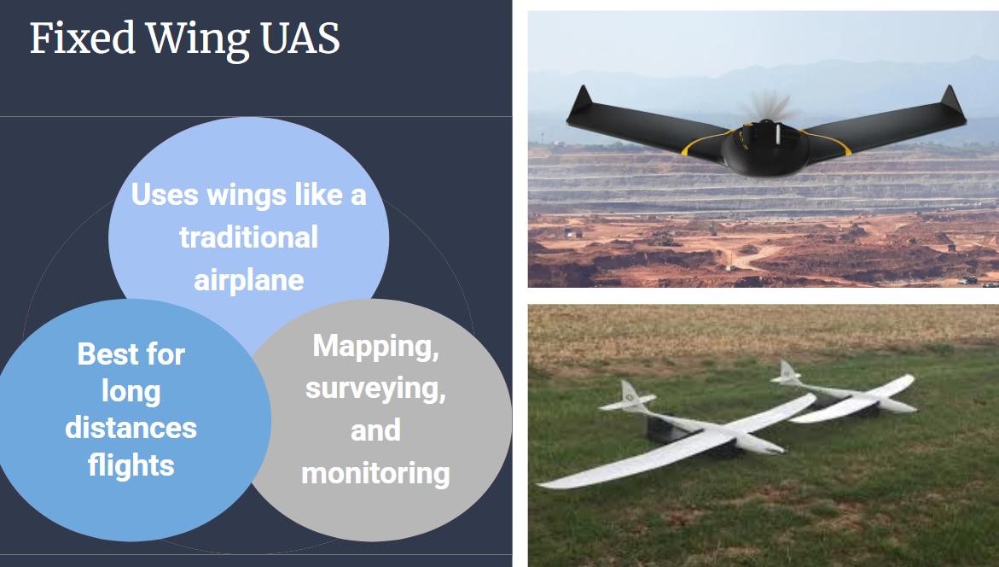
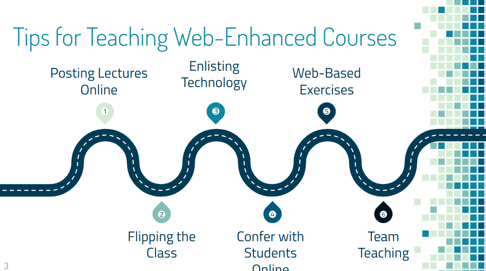
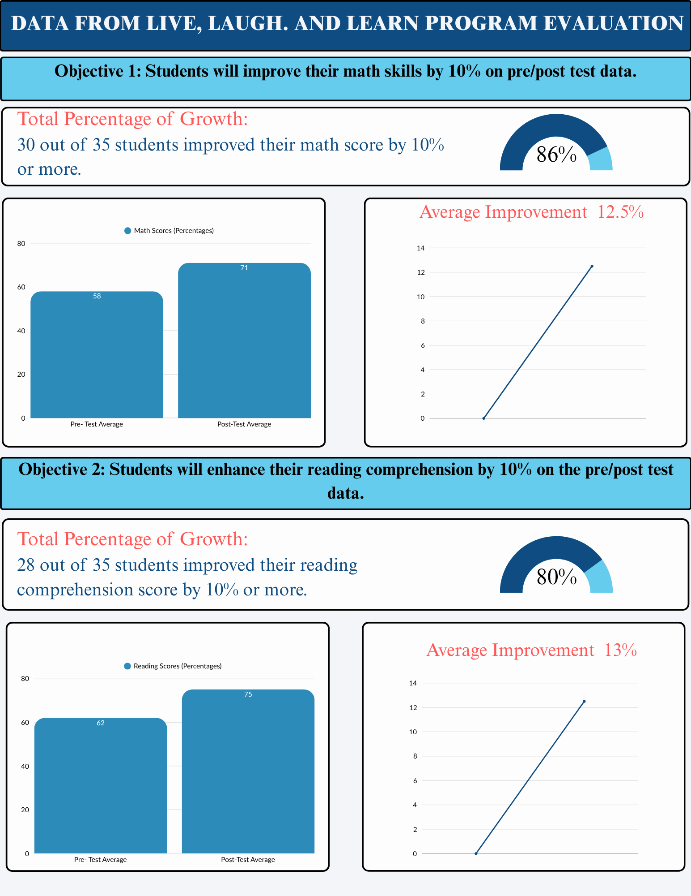

About
My work combines data-informed analysis, creative design, and emerging technologies.
I transform complex content into clear, learner-centered instruction that improves performance and promotes continuous growth.
Resume
Skills
Instructional Design & Corporate Training Development
eLearning Development (Articulate 360, Rise, Camtasia, Canva)
LMS Administration & Integration
Adult Learning Theory & Performance Improvement
Accessibility & Universal Design for Learning (UDL)
Needs Analysis & Evaluation (Kirkpatrick, ADDIE)
Collaboration & Stakeholder Communication
Project Management & Agile Workflow
Technical Writing & Visual Design
Microsoft 365 & Google Workspace
Experience
Instructional Designer
Mississippi State University — Starkville, MS
March 2025 – Present
Collaborate with faculty and SMEs to design and revise online/hybrid courses using best practices.
Conduct course reviews for Quality Matters (QM) alignment, ADA compliance, and institutional policy adherence.
Manage multiple development projects, meeting timelines and quality expectations.
Support technology integration (Studio, Turnitin, Webex) into instructional delivery.
Provide 1:1 consultations and group trainings on effective online teaching strategies.
Curriculum Coordinator / ISD, ASSUREd Safe
Mississippi State University — Starkville, MS
February 2023 – March 2025
Led development, maintenance, and review of curriculum and training programs.
Owned end-to-end instructional design, including evaluation and branding of curriculum content.
Coordinated with FEMA, FAA, NIST, DHS, state EMAs, first responders, and other stakeholders to identify UAS education needs.
Worked with external partners to integrate their programs into a federated portfolio.
Middle School Teacher
Archdiocese of Mobile — Mobile, AL
June 2020 – June 2022
Evaluated student performance via verbal assessments, assignments, and standardized tests.
Used multimedia strategies and technology to deliver engaging instruction.
Organized and led school-wide events based on stakeholder data.
5th Grade Math Teacher
Pascagoula–Gautier School District — Gautier, MS
July 2018 – June 2020
A+ Teacher Recipient in Math (2019–2020).
Led “data chats” and developed instructional plans to improve performance.
Analyzed classroom/district/state data to form groups and drive outcomes.
5th Grade Teacher
Anne Arundel County Public Schools — Annapolis, MD
August 2013 – July 2018
5th Grade Team Leader (2015–2016; 2017–2018).
Intermediate Team Leader (2015–2016).
Curriculum and assessment vetting.
Education
Master of Instructional Technology (Expected May 2026)
Mississippi State University — Starkville, MS
Concentration: Instructional Systems and Workforce Development
GPA: 4.0/4.0
January 2024 – May 2026 (expected)
Master of Education (⅔ credits completed)
Goucher College — Towson, MD
Curriculum & Instruction with a focus in School Improvement Leadership
January 2016 – June 2018
Bachelor of Science — Elementary Education
Indiana Institute of Technology — Fort Wayne, IN
August 2008 – December 2012
Artifacts
Click a card to open its gallery. Use Esc to close, ←/→ to navigate.

UAS Projects
Selected UAS training and visualization slides.

Trainings
Web-enhanced course design + training PDFs.

Miscellaneous
Assorted visuals and documents.
×
←
→